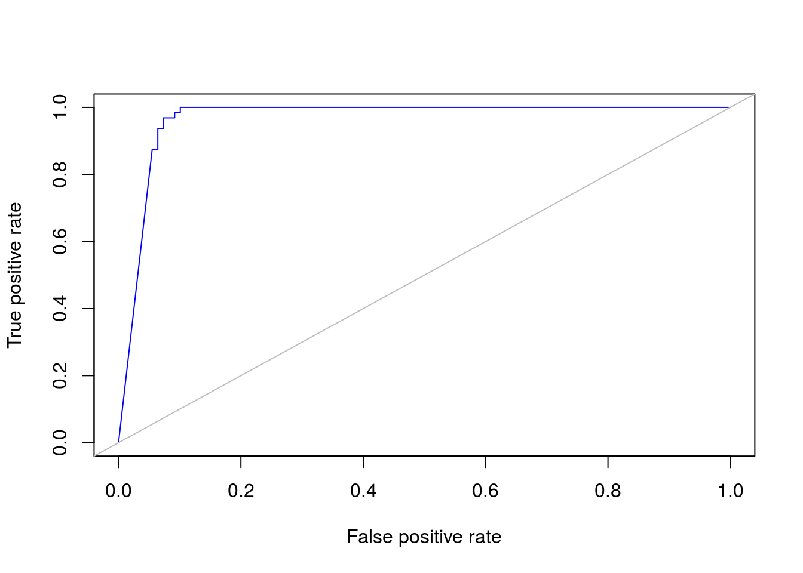

The Naive Bayes classifier is included in the e1071 package. We will also load the MLmetrics and ROCR packages in order to use their functions for evaluation caclulations and ROC curves.
library(e1071)
library(MLmetrics)
library(ROCR)For this example we are going to use the Breast Cancer Wisconsin (Original) Data Set. The steps for loading and splitting the dataset to training and validation are the same as in the decision trees notes
Next we construct the classifier.
model <- naiveBayes(Class ~ ., data=trainData)
print(model)##
## Naive Bayes Classifier for Discrete Predictors
##
## Call:
## naiveBayes.default(x = X, y = Y, laplace = laplace)
##
## A-priori probabilities:
## Y
## benign malignant
## 0.6634981 0.3365019
##
## Conditional probabilities:
## ClumpThickness
## Y [,1] [,2]
## benign 2.971347 1.669291
## malignant 7.197740 2.474965
##
## UniformityCellSize
## Y [,1] [,2]
## benign 1.277937 0.8235752
## malignant 6.649718 2.6610431
##
## UniformityCellShape
## Y [,1] [,2]
## benign 1.406877 0.9532514
## malignant 6.711864 2.5297155
##
## MarginalAdhesion
## Y [,1] [,2]
## benign 1.340974 0.9773646
## malignant 5.559322 3.1941238
##
## SingleEpithelialCellSize
## Y [,1] [,2]
## benign 2.063037 0.7889561
## malignant 5.350282 2.3958801
##
## BareNuclei
## Y [,1] [,2]
## benign 1.318584 1.191182
## malignant 7.657143 3.112294
##
## BlandChromatin
## Y [,1] [,2]
## benign 2.108883 1.077276
## malignant 6.045198 2.313054
##
## NormalNucleoli
## Y [,1] [,2]
## benign 1.237822 0.9211137
## malignant 5.774011 3.3734933
##
## Mitoses
## Y [,1] [,2]
## benign 1.037249 0.2760339
## malignant 2.632768 2.5351281Given the model we start making predictions
predict(model, validationData)## [1] benign benign malignant malignant benign benign benign
## [8] malignant malignant malignant malignant malignant malignant malignant
## [15] malignant malignant malignant benign malignant benign benign
## [22] malignant benign malignant benign benign benign benign
## [29] benign malignant malignant benign benign benign benign
## [36] benign malignant malignant benign malignant benign malignant
## [43] malignant benign benign malignant benign benign benign
## [50] benign benign malignant malignant malignant malignant malignant
## [57] benign malignant benign benign malignant malignant benign
## [64] malignant benign malignant benign malignant benign benign
## [71] malignant malignant malignant benign malignant benign malignant
## [78] benign malignant benign benign malignant benign benign
## [85] malignant malignant malignant malignant malignant malignant benign
## [92] benign benign benign malignant benign malignant benign
## [99] benign malignant malignant malignant benign benign malignant
## [106] benign benign benign malignant malignant benign benign
## [113] benign benign benign benign malignant benign benign
## [120] benign benign malignant benign benign benign benign
## [127] benign benign malignant benign malignant malignant benign
## [134] benign benign malignant benign benign malignant benign
## [141] malignant malignant malignant benign benign benign benign
## [148] malignant benign malignant benign benign malignant benign
## [155] benign benign benign benign benign benign benign
## [162] benign benign malignant benign benign benign benign
## [169] benign malignant benign malignant malignant
## Levels: benign malignant# To get the probabilities and not only the class.
predict(model, validationData, type="raw")## benign malignant
## [1,] 1.000000e+00 2.385476e-09
## [2,] 1.000000e+00 4.177284e-10
## [3,] 1.574442e-11 1.000000e+00
## [4,] 2.125509e-07 9.999998e-01
## [5,] 1.000000e+00 2.955862e-10
## [6,] 1.000000e+00 2.735238e-11
## [7,] 1.000000e+00 2.735238e-11
## [8,] 5.018680e-31 1.000000e+00
## [9,] 1.964288e-18 1.000000e+00
## [10,] 4.151633e-41 1.000000e+00
## [11,] 1.805664e-29 1.000000e+00
## [12,] 7.705031e-29 1.000000e+00
## [13,] 6.987738e-06 9.999930e-01
## [14,] 1.558827e-22 1.000000e+00
## [15,] 2.134333e-228 1.000000e+00
## [16,] 1.126710e-293 1.000000e+00
## [17,] 2.308198e-49 1.000000e+00
## [18,] 9.999687e-01 3.132862e-05
## [19,] 1.083392e-293 1.000000e+00
## [20,] 1.000000e+00 1.594460e-10
## [21,] 1.000000e+00 6.318427e-11
## [22,] 2.388429e-82 1.000000e+00
## [23,] 9.980176e-01 1.982354e-03
## [24,] 5.577250e-44 1.000000e+00
## [25,] 1.000000e+00 1.035223e-08
## [26,] 9.998920e-01 1.080034e-04
## [27,] 1.000000e+00 8.324392e-10
## [28,] 1.000000e+00 2.186675e-10
## [29,] 1.000000e+00 1.840414e-09
## [30,] 1.862199e-86 1.000000e+00
## [31,] 7.731573e-25 1.000000e+00
## [32,] 1.000000e+00 4.755188e-09
## [33,] 1.000000e+00 1.648639e-10
## [34,] 1.000000e+00 1.099427e-10
## [35,] 1.000000e+00 5.740503e-10
## [36,] 1.000000e+00 1.976535e-11
## [37,] 1.291797e-12 1.000000e+00
## [38,] 5.452567e-18 1.000000e+00
## [39,] 1.000000e+00 1.322059e-11
## [40,] 6.911270e-92 1.000000e+00
## [41,] 1.000000e+00 1.271146e-09
## [42,] 8.536396e-68 1.000000e+00
## [43,] 7.773646e-81 1.000000e+00
## [44,] 1.000000e+00 2.987490e-10
## [45,] 1.000000e+00 9.390121e-11
## [46,] 3.487436e-66 1.000000e+00
## [47,] 1.000000e+00 2.296086e-09
## [48,] 1.000000e+00 4.972827e-11
## [49,] 1.000000e+00 4.971436e-11
## [50,] 1.000000e+00 6.280840e-11
## [51,] 1.000000e+00 1.014753e-09
## [52,] 8.708672e-166 1.000000e+00
## [53,] 2.001951e-54 1.000000e+00
## [54,] 6.422500e-69 1.000000e+00
## [55,] 2.364115e-20 1.000000e+00
## [56,] 1.094550e-23 1.000000e+00
## [57,] 9.999991e-01 8.925816e-07
## [58,] 4.692859e-18 1.000000e+00
## [59,] 1.000000e+00 1.363163e-09
## [60,] 1.000000e+00 3.355953e-09
## [61,] 1.623789e-54 1.000000e+00
## [62,] 6.035982e-58 1.000000e+00
## [63,] 9.999996e-01 4.236032e-07
## [64,] 1.974297e-44 1.000000e+00
## [65,] 1.000000e+00 4.971436e-11
## [66,] 2.398156e-36 1.000000e+00
## [67,] 1.000000e+00 8.032011e-10
## [68,] 3.158062e-14 1.000000e+00
## [69,] 9.817653e-01 1.823470e-02
## [70,] 1.000000e+00 1.351274e-10
## [71,] 4.410488e-44 1.000000e+00
## [72,] 0.000000e+00 1.000000e+00
## [73,] 7.172866e-80 1.000000e+00
## [74,] 1.000000e+00 4.971436e-11
## [75,] 1.257713e-10 1.000000e+00
## [76,] 9.998968e-01 1.031797e-04
## [77,] 7.951030e-25 1.000000e+00
## [78,] 1.000000e+00 1.322059e-11
## [79,] 2.869640e-35 1.000000e+00
## [80,] 1.000000e+00 4.179689e-09
## [81,] 1.000000e+00 1.829539e-11
## [82,] 3.617957e-47 1.000000e+00
## [83,] 1.000000e+00 1.322059e-11
## [84,] 1.000000e+00 2.311413e-11
## [85,] 1.997754e-20 1.000000e+00
## [86,] 1.545453e-15 1.000000e+00
## [87,] 1.271787e-15 1.000000e+00
## [88,] 2.250488e-221 1.000000e+00
## [89,] 4.294558e-24 1.000000e+00
## [90,] 0.000000e+00 1.000000e+00
## [91,] 1.000000e+00 2.735238e-11
## [92,] 1.000000e+00 2.126838e-10
## [93,] 1.000000e+00 5.197332e-10
## [94,] 1.000000e+00 1.322059e-11
## [95,] 2.677625e-04 9.997322e-01
## [96,] 1.000000e+00 4.169608e-09
## [97,] 3.788186e-54 1.000000e+00
## [98,] 1.000000e+00 6.106006e-10
## [99,] 1.000000e+00 1.829539e-11
## [100,] 1.532659e-68 1.000000e+00
## [101,] 1.421684e-03 9.985783e-01
## [102,] 1.195370e-58 1.000000e+00
## [103,] 9.999983e-01 1.654438e-06
## [104,] 9.999999e-01 6.511079e-08
## [105,] 7.514335e-87 1.000000e+00
## [106,] 9.999982e-01 1.758357e-06
## [107,] 1.000000e+00 4.755188e-09
## [108,] 1.000000e+00 1.134097e-09
## [109,] 2.838647e-36 1.000000e+00
## [110,] 8.970340e-56 1.000000e+00
## [111,] 1.000000e+00 2.135961e-10
## [112,] 9.999914e-01 8.626064e-06
## [113,] 1.000000e+00 1.322059e-11
## [114,] 1.000000e+00 1.670271e-11
## [115,] 1.000000e+00 2.048484e-09
## [116,] 1.000000e+00 1.575355e-10
## [117,] 4.987931e-77 1.000000e+00
## [118,] 1.000000e+00 3.593459e-11
## [119,] 1.000000e+00 7.944666e-11
## [120,] 1.000000e+00 6.132197e-10
## [121,] 1.000000e+00 1.120644e-09
## [122,] 3.682535e-22 1.000000e+00
## [123,] 9.997819e-01 2.180738e-04
## [124,] 1.000000e+00 1.099427e-10
## [125,] 1.000000e+00 1.933137e-10
## [126,] 1.000000e+00 7.938322e-10
## [127,] 1.000000e+00 1.976535e-11
## [128,] 1.000000e+00 1.322059e-11
## [129,] 1.218724e-67 1.000000e+00
## [130,] 1.000000e+00 2.633891e-10
## [131,] 4.735150e-38 1.000000e+00
## [132,] 6.141877e-32 1.000000e+00
## [133,] 1.000000e+00 1.406247e-09
## [134,] 1.000000e+00 9.663993e-10
## [135,] 1.000000e+00 3.593459e-11
## [136,] 6.190452e-41 1.000000e+00
## [137,] 1.000000e+00 8.032011e-10
## [138,] 1.000000e+00 4.971436e-11
## [139,] 3.058055e-85 1.000000e+00
## [140,] 1.000000e+00 3.380256e-10
## [141,] 1.770307e-69 1.000000e+00
## [142,] 1.694771e-54 1.000000e+00
## [143,] 9.788137e-67 1.000000e+00
## [144,] 1.000000e+00 4.972827e-11
## [145,] 1.000000e+00 1.829539e-11
## [146,] 1.000000e+00 7.394183e-10
## [147,] 9.998429e-01 1.571402e-04
## [148,] 5.864479e-103 1.000000e+00
## [149,] 1.000000e+00 2.135961e-10
## [150,] 9.858815e-35 1.000000e+00
## [151,] 1.000000e+00 2.750252e-10
## [152,] 1.000000e+00 4.972827e-11
## [153,] 5.438479e-29 1.000000e+00
## [154,] 1.000000e+00 8.550687e-10
## [155,] 1.000000e+00 1.768683e-09
## [156,] 9.999999e-01 1.150790e-07
## [157,] 1.000000e+00 1.547702e-08
## [158,] 1.000000e+00 1.976535e-11
## [159,] 1.000000e+00 9.557517e-09
## [160,] 1.000000e+00 7.944666e-11
## [161,] 1.000000e+00 1.705540e-09
## [162,] 1.000000e+00 4.972827e-11
## [163,] 1.000000e+00 5.861203e-10
## [164,] 1.792218e-17 1.000000e+00
## [165,] 1.000000e+00 1.322059e-11
## [166,] 1.000000e+00 1.829539e-11
## [167,] 1.000000e+00 1.322059e-11
## [168,] 1.000000e+00 6.821228e-10
## [169,] 9.999999e-01 5.537676e-08
## [170,] 5.796299e-203 1.000000e+00
## [171,] 1.000000e+00 1.322059e-11
## [172,] 4.009855e-127 1.000000e+00
## [173,] 5.420348e-46 1.000000e+00To evaluate the model we use the MLmetrics and the ROCR packages.
ytest <- validationData$Class
pred <- predict(model, validationData)
pred_prob <- predict(model, validationData, type="raw")
ConfusionMatrix(ytest, pred)## y_pred
## y_true benign malignant
## benign 99 2
## malignant 10 62Accuracy(ytest, pred)## [1] 0.9306358Precision(ytest, pred)## [1] 0.980198Recall(ytest, pred)## [1] 0.9082569F1_Score(ytest, pred)## [1] 0.9428571Given the results of the classifier as probabilities we can calculate the true positive rate (TPR) and the false positive rate (FPR) with the commands:
pred_obj = prediction(pred_prob[, 2], ytest,label.ordering=c("benign", "malignant"))
ROCcurve <- performance(pred_obj, "tpr", "fpr")and we can plot the ROC curve with the commands:
plot(ROCcurve, col = "blue")
abline(0,1, col = "grey")
In statistics, a receiver operating characteristic (ROC), or ROC curve, is a graphical plot that illustrates the performance of a binary classifier system as its discrimination threshold is varied. The curve is created by plotting the true positive rate (TPR) against the false positive rate (FPR) at various threshold settings
An ROC curve demonstrates several things:
Accuracy is measured by the area under the ROC curve. An area of 1 represents a perfect test; an area of .5 represents a worthless test. A rough guide for classifying the accuracy of a diagnostic test is the traditional academic point system:
.90-1 = excellent (A) .80-.90 = good (B) .70-.80 = fair (C) .60-.70 = poor (D) .50-.60 = fail (F)
Reference: http://gim.unmc.edu/dxtests/ROC1.htm